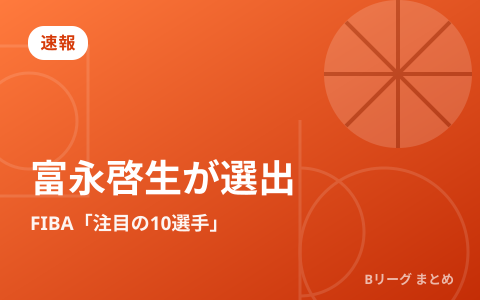

FIBAがW杯アジア予選「注目の10選手」を発表 日本代表から富永啓生が選出

FIBA（国際バスケットボール連盟）が、ワールドカップ2027アジア地区予選で「注目すべき10選手」を発表し、男子日本代表からはシューターの富永啓生が選ばれました。富永は試合の流れを変えられる存在として高く評価されており、7月のWindow3でも大きな期待が寄せられます。
「注目の10選手」とは
これは、アジア予選で活躍が期待される選手をFIBAがピックアップして紹介する企画です。各国を代表するタレントが並ぶ中に日本から富永が選出されたことは、彼の得点力が国際的にも認知されていることを示しています。アジアのトップ選手と肩を並べる評価は、日本バスケにとっても明るい話題です。
富永啓生のプレースタイル
富永啓生は、長距離からでも高確率で沈める3ポイントシュートが最大の武器です。一度リズムに乗ると連続得点で試合の流れを一気に引き寄せる、いわゆる“起爆剤”タイプ。守備側は常に警戒を強いられるため、彼がコートにいるだけで味方のスペースが広がるという効果もあります。アメリカでの挑戦を経て、勝負強さにも磨きがかかっています。
Window3での期待
7月のWindow3は、中国・韓国とのアウェー2連戦という難しい日程です。こうした締まった試合では、一発で流れを変えられるシューターの存在が勝敗を分けます。富永のアウトサイドが要所で決まれば、日本にとって大きなアドバンテージになるでしょう。招集メンバーの全体像は第2次強化合宿の記事でまとめています。
Q. なぜシューターがそんなに重要なの？
A. 3ポイントは一度に3点入るうえ、決まると相手の守備が外へ引き出され、味方がゴール下を攻めやすくなります。流れを変える力が大きいのです。
出典：バスケットボールキング「FIBAがW杯アジア予選の“注目10選手”を発表…バスケ日本代表から富永啓生が選出」（2026年6月27日）
https://basketballking.jp/news/japan/20260627/620809.html